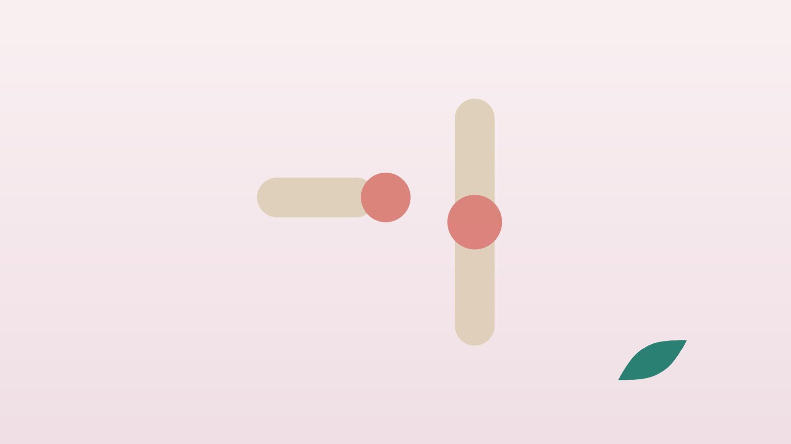

건강 칼럼 · 임신·출산 · 인천 산후 관절 통증 한의원
출산 뒤 손목과 무릎이 시큰하다면, 산후 관절 통증 한방 관리

내 손목·무릎 통증, 산후 관절 통증일까요?
- 아기를 들어 올릴 때 엄지 쪽 손목이 찌릿하다
- 엄지를 손바닥 안에 넣고 주먹을 쥔 채 새끼손가락 쪽으로 꺾으면 아프다
- 아침에 손가락이 뻣뻣하고 부은 느낌이 든다
- 쪼그려 앉았다 일어날 때 무릎 앞이 시큰하다
- 아기를 안고 계단을 내려가면 무릎이 욱신거린다
- 찬물에 손을 담그거나 바람을 쐬면 마디가 시리다
이 체크리스트는 진단 도구가 아닙니다. 엄지를 감싸 쥐고 꺾을 때 통증이 뚜렷하다면 손목 건초염일 가능성이 있어 진찰을 받아 보세요.
출산 뒤에 손목과 무릎이 아픈 이유는 무엇인가요?
임신 중 호르몬으로 느슨해진 인대와 힘줄은 출산 뒤 바로 단단해지지 않는데, 이때 3kg 남짓에서 점점 무거워지는 아기를 손목으로 받치니 힘줄이 쉽게 지칩니다.
- 드퀘르뱅 건초염: 엄지를 펴고 벌리는 두 힘줄이 손목 엄지 쪽 좁은 터널을 지나다 마찰로 붓는 것입니다. 아기 겨드랑이에 손을 넣어 엄지를 벌린 채 드는 동작이 가장 큰 부담입니다.
- 손가락 방아쇠·손목 터널: 손가락이 걸리듯 딸깍거리거나, 밤에 엄지·검지·중지가 저리면 다른 힘줄·신경 문제를 함께 봅니다.
- 무릎 앞 통증: 바닥 생활, 쪼그려 앉기, 체중 증가로 무릎뼈 아래 연골과 힘줄에 부담이 쌓입니다.
다른 진료가 먼저인 경우
- 관절이 붉고 뜨겁게 부으며 열이 난다 (감염·통풍 등)
- 손가락 여러 마디가 양쪽 대칭으로 붓고 아침 굳음이 1시간 넘게 간다 (류마티스 관절염 확인)
- 넘어진 뒤 손목이 심하게 붓고 모양이 변했다 (골절 확인)
- 한쪽 종아리가 붓고 아프거나 숨이 차다 (산후 혈전 의심, 응급실)
- 출산 뒤 두통과 함께 손발이 갑자기 붓고 혈압이 높다 (산후 임신중독증 확인)
이런 경우에는 정형외과, 류마티스내과, 산부인과 진료를 먼저 받으세요. 숨이 차거나 가슴이 아프면 바로 119를 부르세요.
한의학은 산후 관절 통증을 어떻게 보나요?
한의학에서는 출산 뒤 마디마디가 쑤시고 시린 것을 산후신통(産後身痛), 흔히 산후풍(産後風)이라 불렀습니다. 출산으로 기와 혈이 크게 빠져나가 비어 있는 틈에 찬 기운과 습한 기운이 경락에 들어와 머문다고 보았습니다.
젖도 혈에서 만들어진다고 보아, 수유 기간에는 힘줄을 적실 혈이 더 모자라기 쉽다고 해석합니다. 그래서 아픈 마디를 풀며 빠진 기혈을 채웁니다.
나의 산후 관절 통증은 어떤 유형일까?
수유 여부와 출산 후 기간을 함께 보고 나누는 한의학적 구분입니다.
1. 혈허(血虛) 기운이 빠져 저린 유형
- 이런 분에게 많아요
- 출혈이 많았거나 모유 수유 중인 분
- 나타나는 모습
- 손목·손가락이 저리고 힘이 없어 물건을 놓친다
- 함께 오는 몸의 신호
- 어지러움, 머리카락 빠짐, 눈 침침
- 진찰에서 보이는 모습
- 혀 색이 옅고 맥이 가늚
- 치료 방향
- 혈을 보해 힘줄을 적시는 방향 (사물탕·팔진탕 계열)
- 오늘부터 해 볼 것
- 수유 쿠션을 써서 손목이 아기 무게를 받치지 않게 해 보세요.
2. 풍한습(風寒濕) 시리고 무거운 유형
- 이런 분에게 많아요
- 찬물 설거지나 에어컨 바람에 자주 노출된 분
- 나타나는 모습
- 마디가 시리고 흐린 날 더 쑤신다
- 함께 오는 몸의 신호
- 몸이 무겁고 붓는 느낌
- 진찰에서 보이는 모습
- 혀가 촉촉하고 흰 태, 맥이 가라앉음
- 치료 방향
- 찬 기운과 습을 걷어 경락을 데우는 방향 (독활기생탕 계열)
- 오늘부터 해 볼 것
- 설거지는 따뜻한 물과 고무장갑으로 하세요.
3. 과용·어혈 한 자리가 붓고 찌르는 유형
- 이런 분에게 많아요
- 아기를 한쪽으로만 안거나 큰아이까지 돌보는 분
- 나타나는 모습
- 엄지 쪽 손목이나 무릎 앞 한 자리가 붓고 찌른다
- 함께 오는 몸의 신호
- 움직일 때 걸리는 느낌, 밤에 욱신거림
- 진찰에서 보이는 모습
- 뚜렷한 압통과 부기
- 치료 방향
- 막힌 혈을 풀고 염증을 가라앉히는 방향
- 오늘부터 해 볼 것
- 안는 팔을 30분마다 바꾸고 손목 보호대를 낮에 차 보세요.
한의원에서는 어떻게 진찰하나요?
- 출산과 수유: 출산 방법과 시기, 모유 수유 여부, 출혈량을 여쭙습니다.
- 손목·무릎 검사: 엄지를 감싸 쥐고 손목을 꺾는 검사로 건초염을 확인하고, 무릎은 굽혔다 펴며 아픈 자리를 찾습니다.
- 초음파: 엄지 쪽 힘줄이 두꺼워졌는지, 힘줄 집에 물이 찼는지, 무릎 힘줄과 관절의 부기를 실시간으로 봅니다.
- 복용 약: 진통제, 철분제 등 드시는 약을 알려 주시면 확인해 처방합니다.
침·약침·추나·한약 치료는 어떻게 하나요?
1. 침 치료
- 양계(陽谿): 엄지를 위로 젖혔을 때 손목 엄지 쪽에 생기는 오목한 곳입니다. 건초염 자리와 가깝습니다.
- 열결(列缺): 손목 엄지 쪽 가로 주름에서 팔꿈치 방향으로 손가락 두 개 너비쯤 올라간 뼈 위입니다.
- 슬안(膝眼): 무릎을 굽혔을 때 무릎뼈 아래 양쪽에 생기는 두 오목한 곳입니다.
- 족삼리(足三里): 정강이뼈 바깥, 무릎 아래 오목한 자리에서 한 뼘의 절반쯤 내려온 곳입니다. 지친 기운을 북돋울 때 씁니다.
붓기가 심한 자리는 바로 찌르기보다 주변 혈을 먼저 쓰고, 굳은 손목과 무릎에는 온열 요법을 더합니다.
2. 약침·초음파 가이드 약침과 추나 요법
약침은 일반 약침과 초음파 가이드 약침을 모두 시행하며, 아픈 부위의 깊이와 주변 구조에 따라 진찰 후 골라 씁니다. 초음파 가이드 약침은 초음파 화면으로 바늘 끝을 확인하면서 놓는 방식입니다. 초음파로 엄지 쪽 두 힘줄을 싸고 있는 힘줄 집의 두께와 물 고임을 보며, 바로 옆을 지나는 요골 신경 가지를 피해 힘줄 집 주변에 약액이 퍼지도록 놓습니다. 손목과 팔꿈치, 아기를 안느라 굳은 목·어깨가 함께 아픈 경우 진찰 후 추나 요법을 시행합니다.
3. 한약
출산으로 빠진 기혈을 채우고 힘줄을 적시는 방향으로 탕약을 처방합니다. 모유 수유 중이라면 진료 때 꼭 알려 주세요. 수유 여부와 아기 개월 수를 확인한 뒤 젖 양과 아기에게 부담이 적은 약재로 처방합니다. 다시 임신 중이거나 갑상선 질환 병력이 있다면 진료 때 꼭 알려 주세요. 확인 후 안전한 약재로 처방합니다. 한약은 원장이 원내 탕전실에서 약재 선별부터 달이는 과정까지 직접 관리하며, 10일분씩 처방해 복용 경과를 보고 약재 구성과 양을 조절합니다. 아픈 자리는 초음파 가이드 약침과 추나로 다스리고, 통증이 오래가게 만드는 몸속의 기혈 순환과 장부 기능은 체질에 맞춘 한약으로 함께 살피면 통증 완화와 재발 관리를 함께 도모할 수 있습니다.
원장님이 네이버 블로그에 진료 이야기와 건강 정보를 꾸준히 올리고 있습니다. 더 많은 이야기는 블로그에서 확인해 보세요.
블로그 보기관리는 어떤 순서로 진행되나요?
- 원인 확인 진찰과 초음파로 건초염인지, 다른 관절 병인지 구분합니다.
- 통증 조절기 침과 약침으로 붓기와 찌르는 통증을 가라앉힙니다.
- 회복기 한약으로 기혈을 채우고 추나로 손목·무릎 주변 균형을 맞춥니다.
- 생활 습관 점검 안는 자세와 수유 자세를 함께 바로잡아 재발을 줄입니다.
기간과 횟수는 증상이 얼마나 오래되었는지, 동반 증상이 무엇인지에 따라 달라지며, 진찰 후 개인별로 안내합니다.
손목과 무릎을 아끼는 육아 습관
- 아기 들 때: 엄지를 벌려 겨드랑이를 잡지 말고, 한 손은 엉덩이 아래 다른 손은 목 뒤를 받쳐 팔 전체로 떠올리듯 듭니다.
- 수유 자세: 수유 쿠션으로 아기 높이를 가슴까지 올려 손목이 꺾이지 않게 합니다.
- 기저귀 갈이: 바닥에 쪼그리지 말고 허리 높이 기저귀대나 침대 위에서 갈아 주세요.
- 손목 보호대: 엄지까지 감싸는 보호대를 낮 동안 차면 힘줄이 쉴 수 있습니다.
- 허벅지 근력: 의자에 앉아 무릎을 펴고 5초 버티기를 양쪽 10번씩 하면 무릎 부담이 줄어듭니다.
다른 진료가 함께 필요한 경우
- 손목 통증이 몇 달 이어져 일상이 어렵다면 정형외과 진료도 함께 받아 보세요.
- 여러 관절이 붓고 피로가 심하면 류마티스 인자와 갑상선 기능 검사를 받아 보세요.
- 산후 갑상선염으로 갑상선약을 처방받았다면 담당 의사와 상의 없이 끊지 마세요.
- 기분이 계속 가라앉고 아기 돌보기가 버겁다면 산후우울증일 수 있어 정신건강의학과 도움을 함께 받으세요.
자주 묻는 질문 Q&A
- Q1. 젖을 먹이는 중에도 손목 치료용 한약을 지을 수 있나요?
- 수유 중임을 알려 주시면 아기 개월 수와 상태를 확인해 약재를 골라 처방합니다.
- Q2. 손목 건초염은 쉬면 낫나요?
- 가벼우면 쉬고 보호대를 차는 것만으로 줄기도 하지만, 육아로 계속 쓰게 되어 오래가는 경우가 많습니다.
- Q3. 산후풍은 진짜 있는 병인가요?
- 현대 의학의 단일 병명은 아니지만, 출산 뒤 관절이 시리고 쑤시는 증상을 한의학에서 묶어 부르는 말입니다.
- Q4. 수유 중에 약침을 맞아도 되나요?
- 수유 여부를 확인하고 약액을 골라 시행합니다.
- Q5. 제왕절개를 했는데 치료가 가능한가요?
- 가능합니다. 수술 부위와 회복 상태를 확인하고 배에 부담이 없는 자세로 치료합니다.
- Q6. 언제부터 치료를 받을 수 있나요?
- 출산 방법과 회복 상태에 따라 다르며, 통증이 시작되면 진찰로 시기를 정합니다.
- Q7. 손목 보호대는 밤에도 차야 하나요?
- 밤에는 수유 때 불편하면 풀고, 낮에 아기를 안을 때 차는 것이 좋습니다.
- Q8. 집에서 손목에 해 볼 지압이 있나요?
- 손목에서 팔꿈치 쪽 팔 바깥 근육을 반대 손 엄지로 부드럽게 눌러 풀어 주세요. 부은 자리는 세게 누르지 마세요.
문원열 대표원장한의사 · 365스마일한의원
임상 경력 15년, 인천 서구 가정동에서 개원 후 10년째 진료하고 있으며, FCST 턱관절학회·연부조직학회·침도학회 등에서 활동합니다. 아픈 곳만이 아니라 증상의 원인을 찾아 진료합니다.
진료 안내
- 진료시간
- 평일 09:00~20:00 (점심시간 13:00~14:00, 접수 마감 19:30)
토·일·공휴일 09:00~15:00 (접수 마감 14:30) - 주소
- 인천광역시 서구 가경주로 46, 2층 (가정동)
인천2호선 가정중앙시장역 인근
영상으로 길 안내 보기 → - 주차
- 한의원 건물 바로 앞 1층 도원주차장
- 예약
- 예약 바로가기 또는 전화 예약
진료시간은 사정에 따라 바뀔 수 있으니 방문 전 전화로 확인해 주세요.
함께 읽으면 좋은 칼럼
건강 칼럼 전체 보기 →


참고 자료
- Ilyas AM, et al. De Quervain tenosynovitis of the wrist. J Am Acad Orthop Surg, 2007
- 허준, 『동의보감(東醫寶鑑)』 잡병편 부인(婦人)
- 질병관리청 국가건강정보포털 — 원문
※ 이 글은 일반적인 건강 정보이며, 개인의 상태에 따라 치료 방법과 결과는 다를 수 있습니다. 정확한 진단과 치료는 진료를 통해 결정됩니다. 침·약침 시술 후 드물게 멍, 통증 등이 생길 수 있습니다.